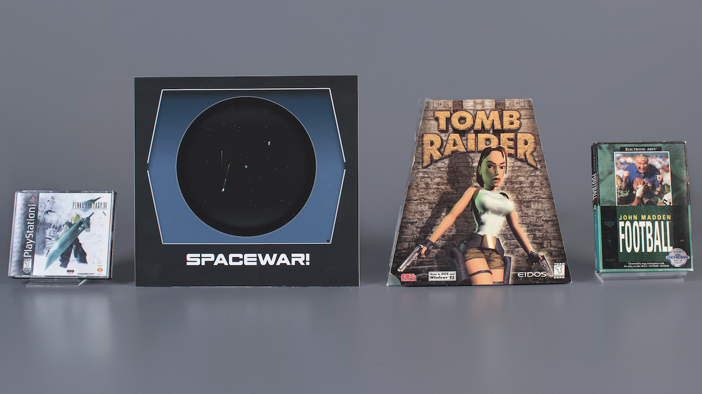

7 maja 2018
Jakiś czas temu pisałem o kolejnej edycji głosowania nad grami, które powinny dołączyć do listy gier wszech czasów (World Video Game Hall of Fame). Kilka dni temu fundacja działająca przy nowojorskim The Strong - National Museum of Play ogłosiła tegorocznych laureatów.

Przypomnijmy, wyboru dokonała komisja "ludzi z branży" spośród niżej wymienionych finalistów:
W tym roku jednak po raz pierwszy do głosu dopuszczono także samych graczy, którzy za pomocą internetowej sondy oddawali swoje typy. W 2018 roku do grona Hall of Fame dołączyły:
Już na pierwszy rzut oka widać, że jury musiało być bardzo "amerykańskie". Fakt pokonania w niektórych kręgach legendarnego Half-Life'a przez grę sportową, o której w naszej części świata mało kto słyszał, osobiście rozpatruję w ramach małego skandalu.